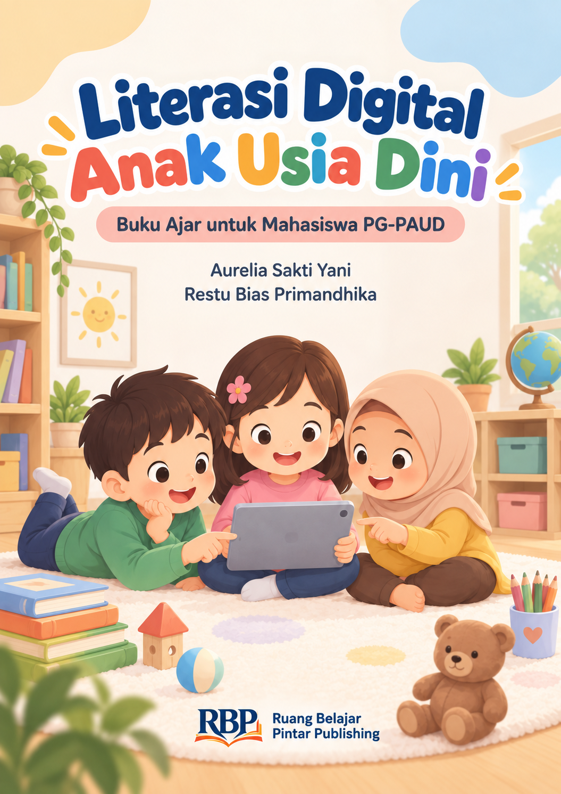

Buku Ajar Literasi Digital (PG-PAUD)
Lebih dari sekadar keterampilan memencet atau menggeser layar gawai!
Kemampuan awal anak untuk menggunakan dan memaknai media secara aman, etis, terampil, kritis, dan bertujuan melalui pengalaman yang sesuai perkembangan serta pendampingan orang dewasa.
Berdasarkan panduan NAEYC & Fred Rogers Center (2012)